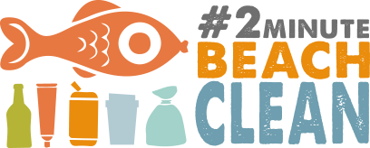
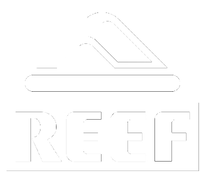

<!DOCTYPE html>
<html lang="en">
<head>
    <meta charset="UTF-8">
    <title>#2minutebeachclean | Home</title>
    <link rel="stylesheet" href="libs/bootstrap/dist/css/bootstrap.min.css">
    <link href='https://fonts.googleapis.com/css?family=Open+Sans:400,300,600,700,800' rel='stylesheet' type='text/css'>
    <link href='https://fonts.googleapis.com/css?family=Open+Sans+Condensed:300' rel='stylesheet' type='text/css'>
    <link rel="stylesheet" href="css/styles.css">
    <script src="libs/jquery/dist/jquery.min.js"></script>
    <script src="libs/bootstrap/dist/js/bootstrap.js"></script>

</head>
<body>

    <header>

        <div class="content">

            <a href="home.html"></a>
            <nav class="main">
                <ul class="menu" style="border: 0px solid green">
                    <li><a class="horiz" href="home.html">Home</a></li>
                    <li>
                        <a class="horiz" href="why.html">Why?</a>
                        <ul style="margin-left: -37px;">
                            <li class="spacer">&nbsp;</li>
                            <li class="selected-arrow">&#9650;</li>
                            <li class="vert-header">Why?</li>
                            <li><a href="safety.html">Safety</a></li>
                        </ul>
                    </li>
                    <li><a class="horiz selected" href="about.html">About</a>
                        <ul style="margin-left: -30px;">
                            <li class="spacer">&nbsp;</li>
                            <li class="selected-arrow">&#9650;</li>
                            <li class="vert-header">About</li>
                            <li><a href="sponsors.html">Sponsors</a></li>
                            <li><a href="about.html">About us</a></li>
                            <li><a href="videos.html">Videos</a></li>
                            <li><a href="media.html">Media</a></li>
                        </ul>
                    </li>
                    <li>
                        <a class="horiz" href="boards.html">Boards</a>
                        <ul style="margin-left: -30px;">
                            <li class="spacer">&nbsp;</li>
                            <li class="selected-arrow">&#9650;</li>
                            <li class="vert-header">Boards</li>
                            <li><a href="boardsmap.html">Map</a></li>
                            <li><a href="boardsinfo.html">Info</a></li>
                        </ul>
                    </li>
                    <li><a class="horiz" href="blog.html">Blog</a></li>
                    <li><a class="horiz" href="global.html">Global</a></li>
                    <li><a class="horiz" href="shop.html">Shop</a></li>
                </ul>
            </nav>

        </div>

    </header>

    <div class="body-container">

        <main class="about">

            <section class="header">

            </section>

            <section class="intro">

                <div class="text-container">
                    <h1>About the #2minutebeachclean</h1>
                    <p>
                        The #2minutebeachclean is run by The Beach Clean Network Limited a not for profit organisation that was set up in 2009
                        <br>by Martin Dorey and Tab Parry to encourage beach cleaning.
                    </p>
                    <p>
                        However the #2minutebeachclean didn’t come about until the winter of 1023 /14 after a series of brutal North Atlantic storms left beaches all over the UK
                        <br> littered with marine plastics. Using twitter and Instagram to try to inspire others, Martin came up with the idea of doing just 2 minutes at a time – but every
                        <br> time - and began using the hashtag. Since then many thousands of hashtagged posts have appeared on Instagram and Twitter from every continent.
                    </p>
                    <p>
                        The #2minutebeachclean campaign is funded by profits from sales / sponsorship of beach clean stations (we take about 5-10% of each one for our admin
                        <br> costs), from small grants (we have received 2, totalling £1250) and profits from sales of merchandise.
                    </p>
                    <p>
                        Would you like to support our campaign? <strong>Get in touch.</strong>
                    </p>
                </div>

            </section>

            <section class="left-pic-first">
                <div class="person-container">

                    

                    <div class="person-info">
                        <h1>Martin Dorey</h1>
                        <h2>Founder</h2>
                        <p>Martin is a writer, surfer and beach lover. He also presented a BBC TV show called One Man and his Campervan. He lives in Bude, Cornwall, just a short hop from Crooklets Beach. </p>
                        <p>“After 20 years living in the South West of the UK I have been able to see just how bad the marine litter problem is becoming. I wanted to do something to make a genuine difference and hoped that the #2minutebeachclean might inspire others to join environmental groups, join in with organised cleans and make beach cleaning part of their daily routine.”</p>


                        <div class="social">
                            <a class="facebook" href="#"></a>
                            <a class="twitter" href="#"></a>
                            <a class="linkedin" href="#"></a>
                            <a class="googleplus" href="#"></a>
                            <a class="web" href="#"></a>
                        </div>

                    </div>

                </div>
            </section>

            <section class="right-pic">
                <div class="person-container">

                    

                    <div class="person-info">
                        <h1>Dolly</h1>
                        <h2>Social media and Beach Clean Boards</h2>
                        <p>
                            Dolly is a force of nature - full of energy, unstoppable, unforgettable. She lives in beautiful Clovelly in North Devon and is mum to 5 kids, granny to one and mother to the whole #2minutebeachclean family. She runs the Facebook, Twitter and Instagram accounts and takes care of the daily running for the beach clean boards orders and guardianship. When she’s not doing that she explores the south west with partner David in their little white campervan. Give them a wave.
                        </p>

                        <div class="social">
                            <a class="facebook" href="#"></a>
                            <a class="twitter" href="#"></a>
                            <a class="linkedin" href="#"></a>
                            <a class="googleplus" href="#"></a>
                            <a class="web" href="#"></a>
                        </div>

                    </div>

                </div>
            </section>

            <section class="left-pic-first">
                <div class="person-container">

                    

                    <div class="person-info">
                        <h1>Tab Parry</h1>
                        <h2>Creative Director</h2>
                        <p>Tab is one of the directors of the Beach Clean Network and has been since 2009. She is a graphic designer with a great eye for colour and an knack for making things look wonderful. She designed the #2minutebeachclean brand and beach clean stations. She lives in North Devon with smiling partner Ben and two riotously overexcited boys. Tab is a saint. She likes shoes.</p>

                        <div class="social">
                            <a class="facebook" href="#"></a>
                            <a class="twitter" href="#"></a>
                            <a class="linkedin" href="#"></a>
                            <a class="googleplus" href="#"></a>
                            <a class="web" href="#"></a>
                        </div>

                    </div>

                </div>
            </section>


            <section class="right-pic">
                <div class="person-container">

                    

                    <div class="person-info">
                        <h1>Alan Beech</h1>
                        <h2>King of Web and Widgets</h2>
                        <p>Alan is a camper van owning family man. He’s also our IT genius and has been beavering away in the background making widgets and maps and all sorts to make the #2minutebeachclean campaign tick. Scelerisque vestibulum magna. Nullam hendrerit facilisis augue, at ullamcorper metus sodales sit amet. Cras molestie fringilla tellus ac interdum.                         </p>

                        <div class="social">
                            <a class="facebook" href="#"></a>
                            <a class="twitter" href="#"></a>
                            <a class="linkedin" href="#"></a>
                            <a class="googleplus" href="#"></a>
                            <a class="web" href="#"></a>
                        </div>
                    </div>

                </div>
            </section>

        </main>

    </div>

    <footer>

        <section class="join">
            <div class="join-the-movement">JOIN THE MOVEMENT, IT'S FREE.</div>
            <div class="why">For early bird offers and news, subscribe and join out tribe.</div>

            <form [ngFormModel]="userForm" (submit)="onClickMe()" class="signup">
                <input ngControl="name" id="name" type="text" placeholder="Your Name" required>
                <input ngControl="email" id="email" type="email" placeholder="Your Email">
                <button type="submit" [disabled]="!userForm.valid">SUBSCRIBE</button>
            </form>
        </section>

        <section class="sponsors-and-social">

            <div class="supported-by">
                Supported by
            </div>
            <div>
                
            </div>
            <div>
                
            </div>

            <div class="follow-us">Follow us</div>

            <div class="social-buttons">
                <a class="instagram-button" href="#" ></a>
                <a class="facebook-button" href="#" ></a>
                <a class="twitter-button" href="#" ></a>
            </div>

            <div class="links">
                <a href="home.html">Home</a> | <a href="about.html">About</a> | <a href="boards.html">Boards</a> | <a href="blog.html">Blog</a> | <a
                    href="global.html">Global</a> | <a href="contact.html">Contact</a> | <a href="shop.html">Shop</a>
            </div>

            <div class="copyright">&copy; 2 Minute Beach Clean 2016</div>

        </section>

    </footer>

</body>
</html>